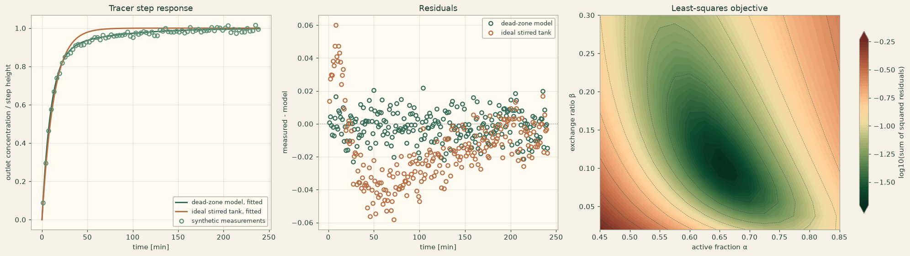

Docs › Examples › Parameter estimation for a non-ideal stirred reactor
Reaction engineering · 0D
Parameter estimation for a non-ideal stirred reactor
A poorly mixed stirred tank modelled as a well-mixed zone and a dead zone that exchange liquid, identified from a tracer step experiment.

What it computes
OneSimulation integrates the two tank balances with its adaptive Dormand-Prince integrator inside a least-squares fit that recovers the active volume fraction and the exchange flow from synthetic tracer data with 1 % noise. The best ideal stirred tank is fitted for comparison and the misfit is mapped over both parameters.
What it checks
The integration matches the exact matrix-exponential solution to 7e-6; the fit returns an active fraction of 0.6555 +- 0.0104 (true 0.65, +0.9 %) and an exchange ratio of 0.1018 +- 0.0094 (true 0.10, +1.8 %) with an rms residual of 0.0090 at the 0.0100 noise level, while the ideal tank leaves 0.0262.
The notebook
The complete notebook, cell by cell. Run it to produce the figures and the comparison printout.
A stirred tank of volume \(V=1\) m³ is fed with \(q=1\) l/s of liquid, so its mean residence time is \(\tau=V/q=1000\) s. An ideal stirred tank would answer a tracer step at the inlet with \(F(t)=1-e^{-t/\tau}\). Real tanks deviate: corners, baffles and the region behind the impeller are poorly mixed. The classical dead-zone model splits the tank into a well-mixed zone of volume \(\alpha V\) and a dead zone of volume \((1-\alpha)V\) that exchange the flow \(\beta q\):
The outlet concentration is \(c_1\). The tank responds faster than an ideal tank at first (only the active zone is flushed) and slower later (the dead zone empties slowly). The two parameters \(\alpha\) and \(\beta\) are found by fitting the model to the measured outlet response.
| quantity | value | |---|---| | tank volume \(V\) | 1 m³ | | feed \(q\) | 1 l/s | | tracer step | \(c_\mathrm{in}=1\) for \(t>0\) | | samples | every 60 s over 4 h, 1 % measurement noise |
The measurements in this notebook are synthetic: they are generated with \(\alpha=0.65\) and \(\beta=0.10\) and disturbed with random noise, so the fit can be judged against known values.
Reference. Levenspiel, Chemical Reaction Engineering, 3rd ed., Ch. 12 (models for non-ideal flow, the dead-zone and exchange models); Fogler, Elements of Chemical Reaction Engineering, Ch. 18. The model is linear, \(\dot{\mathbf c}=A\,\mathbf c+\mathbf b\), and its step response is exactly \(\mathbf c(t)=\bigl(I-e^{At}\bigr)\,\mathbf 1\).
import numpy as np
from scipy.linalg import expm
from scipy.optimize import curve_fit
from onesim.numerics.time import AdaptiveRungeKutta45
from onesim.visualization import theme, plots
theme.set()Model
One function integrates the two balances with the adaptive Dormand-Prince method and returns the outlet concentration at the sampling times.
volume, feed = 1.0, 1e-3
residence_time = volume / feed
integrator = AdaptiveRungeKutta45(relative_tolerance=1e-9, absolute_tolerance=1e-11, maximum_step=5.0)
def outlet(times, active, exchange):
"""Outlet concentration of the dead-zone model after a unit tracer step."""
run = integrator.integrate(lambda t, c: np.array([feed * (1 - c[0]) + exchange * feed * (c[1] - c[0]),
exchange * feed * (c[0] - c[1]) * active / (1 - active)]) / (active * volume),
np.zeros(2), 0.0, float(times[-1]), initial_step=1.0)
return np.interp(times, run.times, run.states[:, 0])Synthetic experiment
The outlet is sampled every minute for four hours. The exact response for the true parameters is disturbed with normally distributed noise of 1 % of the step height.
true = {"active fraction": 0.65, "exchange ratio": 0.10}
samples = np.arange(60.0, 4 * 3600.0 + 1, 60.0)
exact = lambda t, a, b: np.array([1 - (expm(np.array([[-(1 + b), b], [b * a / (1 - a), -b * a / (1 - a)]]) * feed / (a * volume) * s)
@ np.ones(2))[0] for s in np.atleast_1d(t)])
measured = exact(samples, *true.values()) + np.random.default_rng(7).normal(0.0, 0.01, samples.size)Results
First the integrator against the exact solution, then the least-squares fit of the two parameters with their 95 % confidence intervals, and the best ideal tank for comparison.
fine = np.linspace(0.0, 4 * 3600.0, 541)
print(f"time integration against the matrix exponential: largest deviation "
f"{np.abs(outlet(fine, *true.values()) - exact(fine, *true.values())).max():.1e}")
estimate, covariance = curve_fit(outlet, samples, measured, p0=(0.5, 0.5), bounds=((0.05, 0.01), (0.99, 5.0)))
spread = 1.96 * np.sqrt(np.diag(covariance))
print("parameter true estimate 95 % interval deviation")
for (name, value), fitted, width in zip(true.items(), estimate, spread):
print(f"{name:16s} {value:7.3f} {fitted:10.4f} ± {width:.4f} {100 * (fitted / value - 1):+7.2f} %")
ideal_time, _ = curve_fit(lambda t, tau: 1 - np.exp(-t / tau), samples, measured, p0=(residence_time,))
residuals = {"dead-zone model": measured - outlet(samples, *estimate), "ideal stirred tank": measured - (1 - np.exp(-samples / ideal_time[0]))}
for name, values in residuals.items():
print(f"{name:20s} rms residual {np.sqrt(np.mean(values**2)):.4f} (noise level 0.0100)")
print(f"best ideal tank: residence time {ideal_time[0]:.0f} s instead of V/q = {residence_time:.0f} s")
print(f"well-mixed volume {estimate[0] * volume:.3f} m³, exchange flow {estimate[1] * feed * 1e3:.3f} l/s")Figure
The measured response with the fitted dead-zone model and the best ideal tank, the residuals of both models, and the sum of squared residuals over the two parameters, whose minimum is the estimate.
grid = {"active": np.linspace(0.45, 0.85, 17), "exchange": np.linspace(0.02, 0.30, 17)}
misfit = np.array([[np.log10(np.sum((measured - outlet(samples, a, b)) ** 2)) for b in grid["exchange"]] for a in grid["active"]])
fig = plots.figure(1, 3, size=(18, 5))
plots.line(fine / 60, {"dead-zone model, fitted": outlet(fine, *estimate), "ideal stirred tank, fitted": 1 - np.exp(-fine / ideal_time[0])},
points={"synthetic measurements": (samples[::3] / 60, measured[::3])}, xlabel="time [min]",
ylabel="outlet concentration / step height", title="Tracer step response", legend="lower right", ax=fig[0])
plots.line(points={name: (samples / 60, values) for name, values in residuals.items()}, hlines=0.0, xlabel="time [min]",
ylabel="measured - model", title="Residuals", ax=fig[1])
plots.heatmap(grid["active"], grid["exchange"], misfit, contours=12, label="log10(sum of squared residuals)", aspect="auto",
xlabel="active fraction α", ylabel="exchange ratio β", title="Least-squares objective", ax=fig[2])
plots.show()Going further
Replace the step by a short tracer pulse and fit the residence-time distribution \(E(t)\) instead; add a bypass stream to the model (the Cholette-Cloutier model) and see whether the data can tell bypass and dead zone apart; or lower the noise and watch the confidence intervals shrink with its square root.